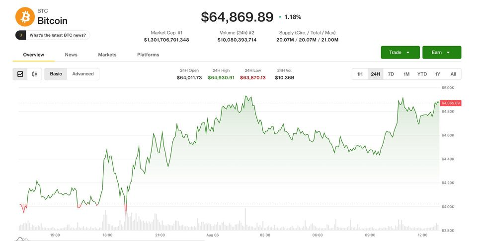
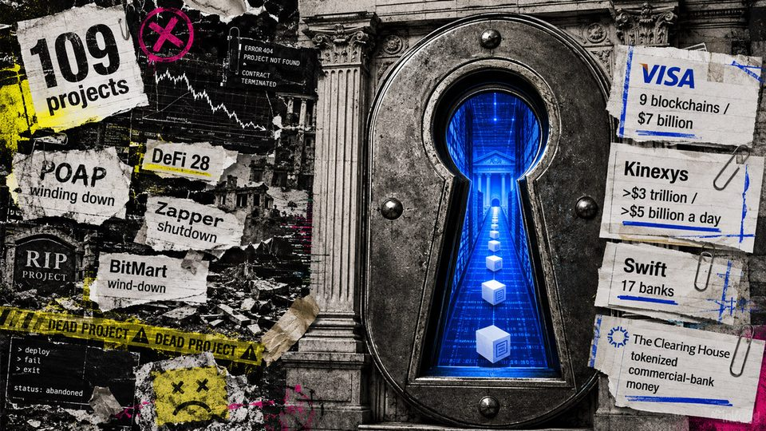

Bitcoin AI Security Audit Files 4,962 Findings Across 390 Projects
A volunteer group is pointing AI agents at Bitcoin project codebases and says 720 of the issues it has filed are high severity or critical.
Russian president signs crypto law, core rules take effect in 2026
Russian President Vladimir Putin signed a crypto law establishing market rules for exchanges, custodians and investors, with core provisions taking effect in September 2026.
NFT startup founder charged with misusing funds from $10 million fundraising
NFT startup founder charged with misusing funds from $10 million fundraising
Bitcoin price breaking out toward $69,000 now opens a turbo path toward $84,000
A Bitcoin breakout attempt briefly pushed price above $65,000 on Aug. 5, but failed to sustain the move, even as Fed funds futures put the odds of a September rate hike at 57.4%...

Meta Debuts AI Coding Agent Muse: Here's How It Compares to Claude Code and Codex
Meta's new agent runs in your terminal, coordinates subagents, and survives crashes—but on the benchmarks that matter, it lags behind.
RWAs buck DeFi slowdown as tokenized assets gain traction: CoinShares
Tokenized real-world assets moved beyond issuance as RWA deposits more than tripled to $7.4 billion, while lending and trading activity expanded despite a broader industry...

Live updates: Coinbase lets U.K. users trade U.S. equities. BTC trades near $65,000
Live updates: Coinbase lets U.K. users trade U.S. equities. BTC trades near $65,000

Is crypto dead yet? Project shutdowns peaked this April but the latest 2026 data hides a scarier trend
DeFi supplied the largest share of 109 tracked exits, but project counts cannot time the market. The post Is crypto dead yet? Project shutdowns peaked this April but the latest...

Cloudflare OS: Here's What's Inside the Open-Source AI Agent Platform
The release targets developers building autonomous apps and workflows on Cloudflare's edge—a clear bet on agent infrastructure.
Yen stablecoin issuer JPYC's Series B reaches $38M
JPYC said it plans to use the new capital to expand its financial and Web3 ecosystem and accelerate adoption of its yen-pegged token.
Bitcoin developers flag 85 critical bugs in an "extremely bad" situation
Bitcoin developers flag 85 critical bugs in an "extremely bad" situation

TeraWulf's Bitcoin mining revenue fell 73% as AI related leases reached 71% of sales
The revenue crossover is real, but Anthropic rent starts only as new capacity is delivered from late 2027. The post TeraWulf’s Bitcoin mining revenue fell 73% as AI related leases...